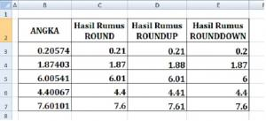
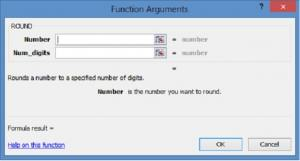
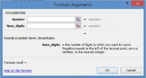
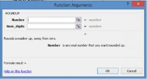

ROUND, ROUNDUP, ROUNDDOWN: pembulatan
ROUND membulatkan seperti biasa, ROUNDUP selalu ke atas, ROUNDDOWN selalu ke bawah (menjauh dari atau mendekat ke nol).
=ROUND(angka; digit)
| angka | Bilangan yang dibulatkan |
|---|---|
| digit | Jumlah desimal. Negatif membulatkan ke puluhan, ratusan, dst. |
Langkah praktik
- =ROUND(2,345;2) menghasilkan 2,35.
- =ROUND(1234;-2) menghasilkan 1200.
- =ROUNDUP(2,341;2) menghasilkan 2,35.
- =ROUNDDOWN(2,349;2) menghasilkan 2,34.
Tangkapan layar praktik



